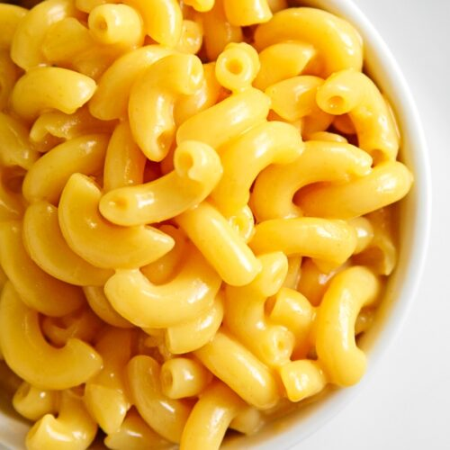

Macaroni and Cheese
Home
Pesto Lasagna
Spaghetti
Macaroni and Cheese

A bowl of macaroni and cheese
View our tasty recipe and ingredients below!
Ingredients
8 oz box elbow macaroni
¼ cup butter
¼ cup all-purpose flour
½ teaspoon salt
ground black pepper to taste
2 cups milk
2 cups shredded cheddar cheese
Directions
Bring a large pot of lightly salted water to a boil. Cook elbow macaroni in the boiling water, stirring
occasionally until cooked through but firm to the bite, 8 minutes.
At the same time, melt butter in a saucepan over medium heat. Add flour, salt, and pepper and stir
until smooth, about five minutes. Pour in milk slowly, while stirring continuously. Continue to cook and stir
until mixture is smooth and bubbling, about five minutes, making sure the milk doesn't burn.
Add cheddar cheese and stir until melted, two to four minutes.
Drain macaroni and fold into cheese sauce until coated